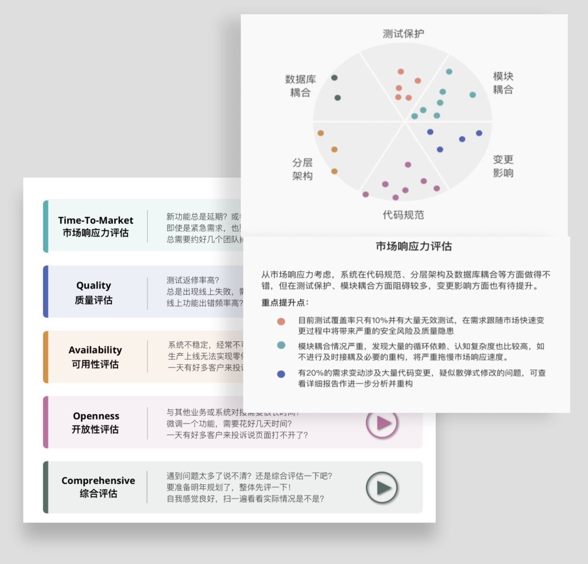
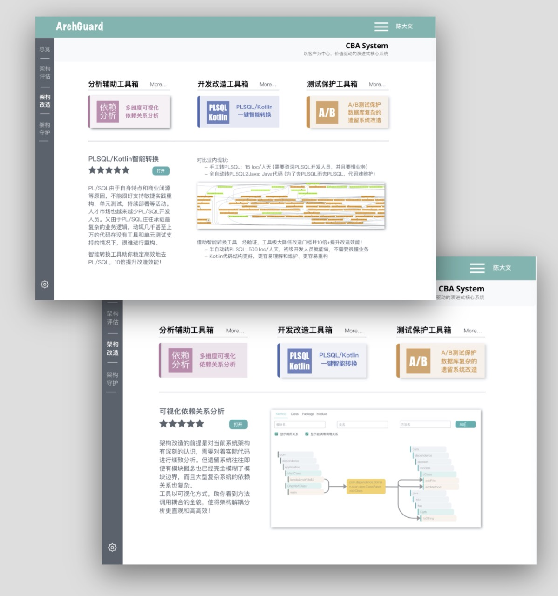
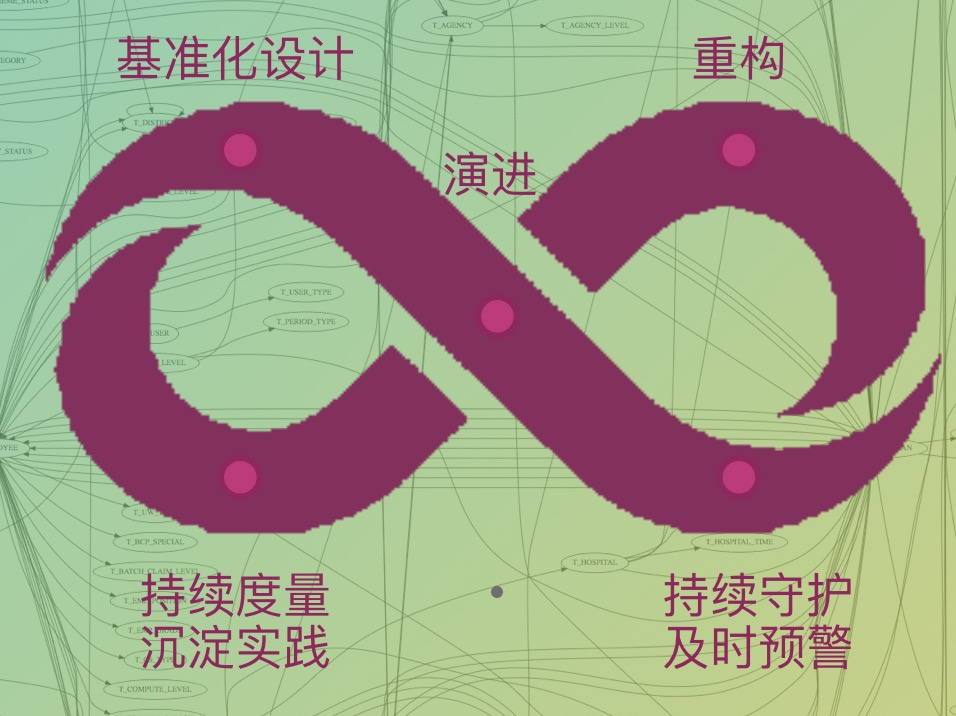
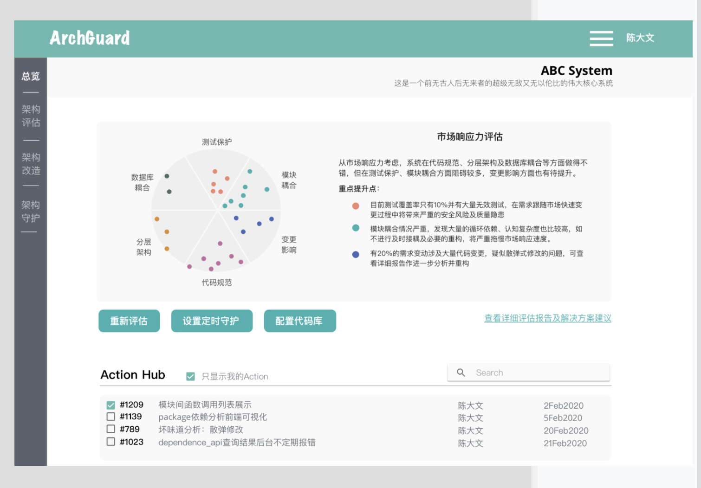

沉淀了我们遗留系统现代化改造经验，向您提供遗留系统现代化全过程中策略定制，改造工具，以及演进架构的帮助
帮助您快速定位改造目标
ArchGuard以业务价值为导向，对系统的项目的各个方面进行扫描，助力用户找到系统存在的薄弱环节
帮助您降低改造门槛，提高改造效率
通过多年ThoughtWorks改造经验总结，ArchGuard基于您系统的问题，向您推荐最适合的改造工具（自研/三方），自动，高效，安全的进行改造
帮助您持续守护系统，防止系统腐化
ArchGuard使用双环守护，多维度守护系统从开发到上线整个生命周期
帮助您定制适合自己系统的基准化标准
ArchGuard支持灵活配置各种代码模版，系统各个评估维度的门禁等，做到不同系统个性化配置
